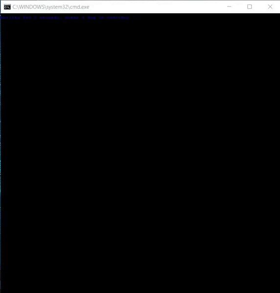
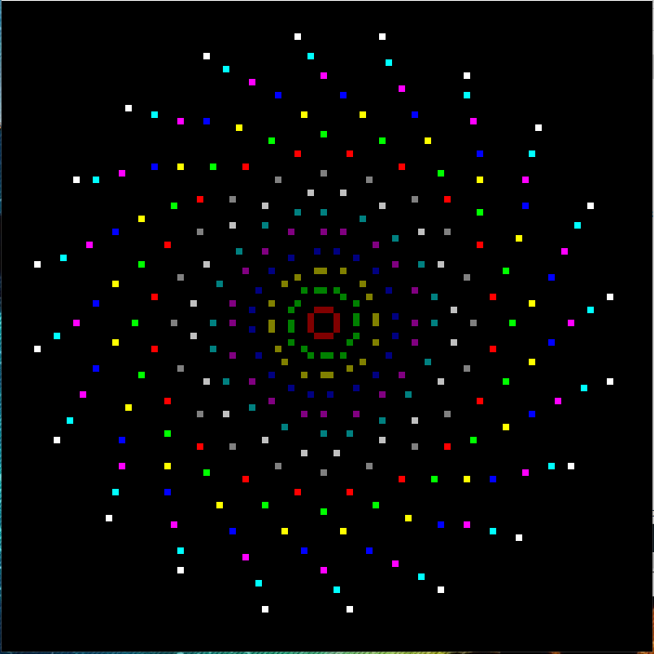
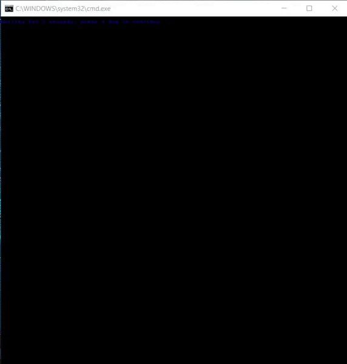

Shapes and rotation
Posted: 01 Apr 2018 22:59
Hello all ^-^

I would mostly like to share (what you all probably already know) but I'm quite proud of it because I took the time to experiment, and learn all of this on my own. I soon come to find out that I've simulated the "mid-point circle" algorithm, but I've applied the math to create shapes of all sides (except circles, being the absolute most trivial).
A circle would be simple.
Expanding my knowledge of this fundamental for circles, I considered dividing up the degrees of a circle, and plotting them evening.
But the experimenting didn't stop there. I wanted to not only get different shapes, but I wanted to expand or shrink their size, and I wanted to rotate them, and I wanted them colorful.
I was using Bresenham's Line algorithm as a function before, but found it's performance to be so slow it made me cringe, so I implemented as a macro. This macro has usage commented in the script.
So this is the script I've come up with! CHECK THE "CHANGE ME!!!!" on line 69
I really hope you enjoy!
For a beautiful phyllotaxis, you can change the SIDES to 20, and change LINE 91 to
instead of


I would mostly like to share (what you all probably already know) but I'm quite proud of it because I took the time to experiment, and learn all of this on my own. I soon come to find out that I've simulated the "mid-point circle" algorithm, but I've applied the math to create shapes of all sides (except circles, being the absolute most trivial).
A circle would be simple.
Code: Select all
x=20 * !cos(x):x=angle! + 50"
y=20 * !sin(x):x=angle! + 50"Code: Select all
360/sidesI was using Bresenham's Line algorithm as a function before, but found it's performance to be so slow it made me cringe, so I implemented as a macro. This macro has usage commented in the script.
So this is the script I've come up with! CHECK THE "CHANGE ME!!!!" on line 69
I really hope you enjoy!
Code: Select all
@echo off & setlocal enableDelayedExpansion
mode 100,100
set ^"LF=^
^" Above empty line is required - do not remove
set ^"\n=^^^%LF%%LF%^%LF%%LF%^^"
rem capture ESC for VT100 %plot% macro. %line% ultilizes %plot%
for /F %%a in ('echo prompt $E^| cmd') do set "ESC=%%a"
set "_SIN=a-a*a/1920*a/312500+a*a/1920*a/15625*a/15625*a/2560000-a*a/1875*a/15360*a/15625*a/15625*a/16000*a/44800000"
set "SIN(x)=(a=(x * 31416 / 180)%%62832, c=(a>>31|1)*a, a-=(((c-47125)>>31)+1)*((a>>31|1)*62832) + (-((c-47125)>>31))*( (((c-15709)>>31)+1)*(-(a>>31|1)*31416+2*a) ), %_SIN%) / 10000"
set "COS(x)=(a=(15708 - x * 31416 / 180)%%62832, c=(a>>31|1)*a, a-=(((c-47125)>>31)+1)*((a>>31|1)*62832) + (-((c-47125)>>31))*( (((c-15709)>>31)+1)*(-(a>>31|1)*31416+2*a) ), %_SIN%) / 10000"
set "_SIN="
rem %plot% x y COLOR(0-255) COLOR(0-255) CHAR
set plot=for %%# in (1 2) do if %%#==2 ( for /f "tokens=1-5" %%1 in ("^!args^!") do (%\n%
set "screen=^!screen^!!esc![%%2;%%1H!esc![38;5;%%3m!esc![48;5;%%4m%%~5!esc![0m"%\n%
)) else set args=
rem %line% Bresenham Line Algorithm for all slopes
rem I will comment this later.. Sorry
rem USAGE:
rem %line% x1 y1 x2 y2 CHAR COLOR(0-255)
set line=for %%# in (1 2) do if %%#==2 ( for /f "tokens=1-6" %%1 in ("^!args^!") do (%\n%
if "%%~6" equ "" ( set "hue=30" ) else ( set "hue=%%~6")%\n%
set /a "xa=%%~1", "ya=%%~2", "xb=%%~3", "yb=%%~4", "dx=%%~3 - %%~1", "dy=%%~4 - %%~2"%\n%
for /f "tokens=1-2" %%6 in ("^!dx^! ^!dy^!") do (%\n%
if %%~7 lss 0 ( set /a "dy=-%%~7", "stepy=-1" ) else ( set "stepy=1" )%\n%
if %%~6 lss 0 ( set /a "dx=-%%~6", "stepx=-1" ) else ( set "stepx=1" )%\n%
set /a "dx<<=1", "dy<<=1"%\n%
)%\n%
for /f "tokens=1-9" %%a in ("^!dx^! ^!dy^! ^!xa^! ^!xb^! ^!ya^! ^!yb^! ^!stepx^! ^!stepy^! ^!hue^!") do (%\n%
if %%~a gtr %%~b (%\n%
set /a "fraction=%%~b - (%%~a >> 1)"%\n%
for /l %%x in (%%~c,%%~g,%%~d) do (%\n%
for /f "tokens=1" %%6 in ("^!fraction^!") do if %%~6 geq 0 set /a "ya+=%%~h", "fraction-=%%~a"%\n%
set /a "fraction+=%%~b"%\n%
for /f "tokens=1" %%6 in ("^!ya^!") do (%\n%
if 0 leq %%x if %%x lss 199 if 0 leq %%~6 if %%~6 lss 199 ^!plot^! %%x %%~6 %%i 0 %%~5%\n%
)%\n%
)%\n%
) else (%\n%
set /a "fraction=%%~a - (%%~b >> 1)"%\n%
for /l %%y in (%%~e,%%~h,%%~f) do (%\n%
for /f "tokens=1" %%6 in ("^!fraction^!") do if %%~6 geq 0 set /a "xa+=%%~g", "fraction-=%%~b"%\n%
set /a "fraction+=%%~a"%\n%
for /f "tokens=1" %%6 in ("^!xa^!") do (%\n%
if 0 leq %%~6 if %%~6 lss 199 if 0 leq %%y if %%y lss 199 ^!plot^! %%~6 %%y %%i 0 %%~5%\n%
)%\n%
)%\n%
)%\n%
)%\n%
)) else set args=
:: Hide the cursor
<nul set /p "=!esc![?25l"
cls
REM CHANGE ME --------
set /a "sides=5"
REM ------------------
set /a "x=50", "y=50", "s=-3"
set /a "angle=360 / sides"
for /l %%a in (0,1,16) do (
set /a "a0+=%%a", "s+=3", "hue=%%a %% 255"
for /l %%c in (1,1,%sides%) do (
set /a "b=%%c - 1"
for /f "tokens=1" %%b in ("!b!") do set /a "a%%c=!a%%b! + angle"
set /a "x%%c=s * !cos(x):x=a%%c! + x", "y%%c=s * !sin(x):x=a%%c! + y"
)
set /a "c=sides + 1" & set /a "x!c!=x1", "y!c!=y1"
for /l %%c in (1,1,%sides%) do (
set /a "d=%%c + 1"
for /f "tokens=1" %%b in ("!d!") do %line% !x%%c! !y%%c! !x%%b! !y%%b! Û !hue!
)
<nul set /p "=!screen!" & set "screen="
)
pause >nul & exitCode: Select all
for /f "tokens=1" %%b in ("!d!") do %plot% !x%%c! !y%%c! !hue! 0 ÛCode: Select all
for /f "tokens=1" %%b in ("!d!") do %line% !x%%c! !y%%c! !x%%b! !y%%b! Û !hue!